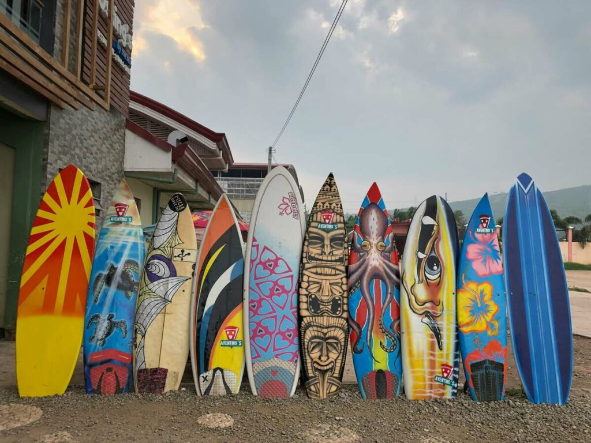

Surfing in Florida
On my road trip in California, I sat on the beach and watched surfers ride the waves. I thought it looked so cool and figured my skills wake surfing behind a boat would translate pretty well to surfing on waves in the ocean. Thus, I decided I wanted to try surfing.

Having grown up in Tallahassee, Florida my whole life, I have been to the beach countless times but never surfed. I mainly frequented beaches on the Gulf Coast where I never really saw surfers. I wondered where I could take a day trip to go surf from my house so turned to Gemini for help on where I should go.
Prompt
Can you recommend surfing spots that are a day’s trip from Tallahassee, FL? I will need to rent gear so take that in to consideration. I will likely need to wear a wet suit because it is December.
Response
Since Tallahassee is inland, you have two distinct options for a surfing day trip: the Gulf Coast (closer, but requires a specific swell) or the Atlantic Coast (further drive, but much more consistent waves).
In December, the water temperature in both regions hovers around 64°F–68°F, so a 3/2mm full wetsuit is recommended.
1. The Atlantic Coast (Jacksonville Beach)
This is your most reliable option. While the drive is longer, the Atlantic consistently produces surfable waves, and the infrastructure for rentals is robust.
- Travel Time: ~2.5 to 3 hours (I-10 East).
- The Vibe: High-energy surf culture with multiple breaks (The Pier, Neptune Beach, and Atlantic Beach).
- Recommended Spot: Jacksonville Beach Pier. It’s a classic Florida beach break that works well on most winter swells.
- Where to Rent Gear:
- Jax Beach Surf Shop: Located right near the action; they offer boards and typically have wetsuit rentals (call ahead to confirm winter stock).
- Sunrise Surf Shop: A local staple with a massive inventory and expert advice on daily conditions.
2. The Gulf Coast (Panama City Beach / St. George Island)
These spots are much closer, but surfing here is “swell dependent”—you usually need a strong front moving through to create rideable waves.
St. George Island (SGI)
- Travel Time: ~1 hour 45 minutes.
- The Vibe: Very quiet, natural, and uncrowded. Best for longboarding or beginners when there is a small Gulf swell.
- Where to Rent Gear:
- St. George Island Outfitters: They rent surfboards ($50/day) and are very helpful with local conditions.
- Note: They may not always carry a full range of winter wetsuit rentals, so it’s best to call and confirm or bring your own.
Panama City Beach (St. Andrews State Park)
- Travel Time: ~2 hours.
- The Vibe: “The Park” (as locals call it) is one of the best spots on the Gulf, especially near the jetties which can produce a clean, hollow left-hander during a winter storm swell.
- Where to Rent Gear:
- Mr. Surf’s Surf Shop: This is the go-to shop for PCB. They offer rentals and are the best source for “surf reports” to tell you if it’s worth the drive from Tallahassee.
Summary Comparison Table
| Location | Drive Time | Wave Consistency | Best For |
|---|---|---|---|
| Jacksonville Beach | 2h 45m | High | Guaranteed surf; professional shops. |
| Panama City Beach | 2h 00m | Medium | Convenience; surfing near the jetties. |
| St. George Island | 1h 45m | Low | Quick trip; peaceful, beginner waves. |
Pro-Tips for December Surfing:
- Check the Forecast: Use Surfline or Magicseaweed the night before. If the Atlantic is “Flat,” don’t bother driving to Jax. If the Gulf is “Flat,” stick to the Atlantic.
- Call Ahead for Wetsuits: Not all shops rent wetsuits (many only rent boards). Call Jax Beach Surf Shop or Mr. Surf’s specifically to reserve a suit in your size.
Would you like me to look up the current surf forecast for this coming weekend at any of these spots?
The information provided was great. I know now why I never really saw people on the beaches on the Gulf. I think the Atlantic seems like the best bet for surfing, and I will just need to call some places to make sure I can get a wetsuit.
With this information, I am planning on attempting to surf this weekend. I just need to convince somebody to go with me…